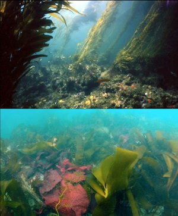
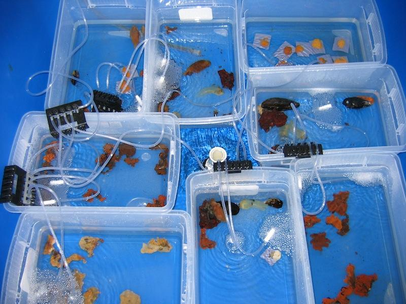

Global environmental change is reshaping food webs through increased rates of extinction and invasion. But how? What kinds of species are winning, and what kinds are losing? How will climate change, overharvesting, habitat fragmentation, urbanization, and more interact to create the food webs of the future? I am interested in examining both global patterns of change to food webs as well as examining how environmental drivers shape food webs at local spatial scales.
How is biodiversity changing?
In an analysis of global and regional trends, I have shown that most species driven extinct have been top predators whereas invasive species are primary consumers. This pattern is consistent both at the scale of a single ecosystem and across the globe. To think about it geometrically, extinctions and invasions are acting together to change the shape of food webs from classical pyramids down to squat boxes.
What drives shifts in trophic structure?

Beyond just documenting patterns, I’m interested in asking why. Why are food webs shifting? What is driving these shifts? How universal are the drivers of change in food web structure?For example, at the Santa Barbara Coastal LTER, I examined how climate change driven increases in the annual frequency of intense storms in the Southern California could change structure of kelp forest food webs. Giant kelp acts as a foundation species, providing habitat and food for many species, as well as determining the balance between algae and sessile invertebrates by reducing light on rocky reefs.
Through an analysis of long-term biological, oceanographic, and satellite data, I found that the loss of kelp by storm-driven waves increases algal diversity but decreases diversity at all other trophic levels. Simulating these results through time, I showed that annual large storms should ultimately simplify the network structure of kelp forest food webs. While these results were derived from structural equation models and simulations, they were still based on correlative evidence. I therefore verified these predictions using early results from a large-scale kelp removal experiment that we have set to run for the next decade. With the LTER, I am beginning to examine how this experimental kelp removal and concomitant changes in food web structure lead to shifts in the allocation of biomass between different compartments of the food web.
Consequences for Ecosystem Function Most marine extinctions at both the local and global scale are of predators. Within kelp forests of the Channel Islands, fewer predator species correlated with less kelp and more herbivores. Experimentally, I have shown that this may be due to different predator species each causing different herbivores to reduce consumption of kelp.
Within communities of marine fouling organisms, I have found similar patterns. There, predator diversity is negatively correlated with the amount of their sessile invertebrate prey. This appears to be due to some complementarity, but also a trade-off in interspecific and intraspecific interactions. Over time, communities with more species of predators have lower cover and biomass, and are able to filter less plankton from the water.
Impacts of Invasive Species Diversity
The field of biodiversity and ecosystem function typically considers the consequences of human-driven extinctions. However, biological invasions can also increase the diversity of some guilds. While we know that the impact of individual invaders can be immense, many exotic species appear to have little impact. As exotic species diversity continues to rise, will there be any impacts of exotic diversity per se? Should there be cause for concern?

In marine communities, my work has shown that the many non-native species are sessile invertebrate filter feeders. These exotic species may alter the amount and consistency of food for other small native species in marine ecosystems. In highly invaded fouling communities, I examined the effects of increases in exotic filter feeder diversity on the removal of plankton. My results showed that diverse mixtures of natives and exotics do not filter water differently than diverse communities of natives. However, increases in exotic species diversity may increase the consistency of water filtration through time. Invasions may thus be decreasing the amount of energy and nutrients that can be channeled into grazers.
Relevant References
-
(2023)
Clarifying the effect of biodiversity on productivity in natural ecosystems with longitudinal data and methods for causal inference.
Nature Communications.
14:
2607.
-
(2023)
Understandable multifunctionality measures using Hill numbers.
Oikos.
2023:
e09402.
-
(2016)
A general biodiversity-function relationship is mediated by trophic level.
Oikos.
126:
n-a-n-a.
-
(2015)
Biodiversity enhances ecosystem multifunctionality across trophic levels and habitats.
Nature.
NA:
NA.
-
(2015)
Effects of five southern California macroalgal diets on consumption, growth, and gonad weight, in the purple sea urchin Strongylocentrotus purpuratus.
PeerJ.
3:
e719.
-
(2015)
Marine biodiversity and ecosystem functioning: what's known and what's next?.
Oikos.
124:
252-265.
-
(2014)
Linking Biodiversity and Ecosystem Services: Current Uncertainties and the Necessary Next Steps.
Bioscience.
64:
49-57.
-
(2014)
Multifunctionality does not imply that all functions are positively correlated..
PNAS.
111:
E5490.
-
(2013)
Biodiversity and Ecosystem Function: Does Pattern Influence Process?.
Marine community ecology and conservation.
:
109-130.
-
(2013)
Effects of predator richness on prey suppression: a meta-analysis.
Ecology.
94:
2180-2187.
-
(2012)
A global synthesis reveals biodiversity loss as a major driver of ecosystem change.
Nature.
486:
105-108.
-
(2011)
The functional role of producer diversity in ecosystems..
American journal of botany.
98:
572-592.
-
(2009)
Short and long term consequences of increases in exotic species richness on water filtration by marine invertebrates..
Ecology letters.
12:
830-841.
-
(2009)
The consequences of consumer diversity loss: different answers from different experimental designs.
Ecology.
90:
2879-2888.
-
(2007)
Reciprocal relationships and potential feedbacks between biodiversity and disturbance..
Ecology letters.
10:
849-864.
-
(2006)
Predator diversity strengthens trophic cascades in kelp forests by modifying herbivore behaviour..
Ecology letters.
9:
61-71.
-
(2006)
Species diversity, invasion success, and ecosystem functioning: disentangling the influence of resource competition, facilitation, and extrinsic factors.
Marine Ecology Progress Series.
311:
251-262.